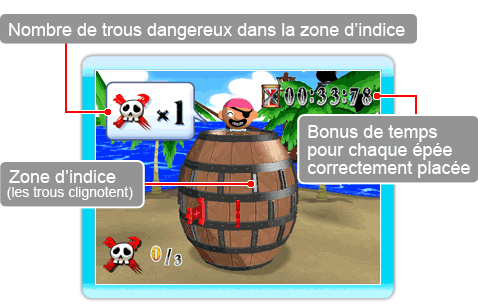

Pop-Up Logique est un mode à 1 joueur.
Contrairement au mode mulitjoueurs Pop-Up Party, il y a plusieurs trous à éviter dans Pop-Up Logique. En jouant, un indice vous indiquera combien il y a de trous à éviter.
Complétez chaque niveau en transperçant chaque trou valable ou en trouvant tous les trous dangereux et en les bouchant avec un X.
● Jouer Pop-up Logique
Vous devez enfoncer votre épée dans le trou sélectionné durant le temps imparti. Si le trou est sans danger, le Capitaine vous montre le nombre de trous dangereux aux alentours. Utilisez ces indices pour éviter de mettre vos épées dans les trou dangereux. À chaque fois que vous transpercez correctement le tonneau, un temps bonus sera ajouté à votre total de temps restant.
Si vous enfoncez votre épée dans un trou dangereux, vous perdez considérablement du temps. Vous continuez à jouer tant qu'il vous reste du temps. Lorsque le temps est à 0, vous avez perdu !
○ Écran d'affichage des indices

● Compléter un niveau
Complétez le niveau pour passer au suivant. Le temps restant sera ajouté au niveau suivant. Le nombre et la position des trous dangereux sont réinitialisés ainsi que les épées déjà mises. Le nombre de trous dangereux augmente à chaque niveau.
Le nombre de niveaux que vous avez complétés sera enregistré au classement, que vous pouvez consulter à l'écran du classement.